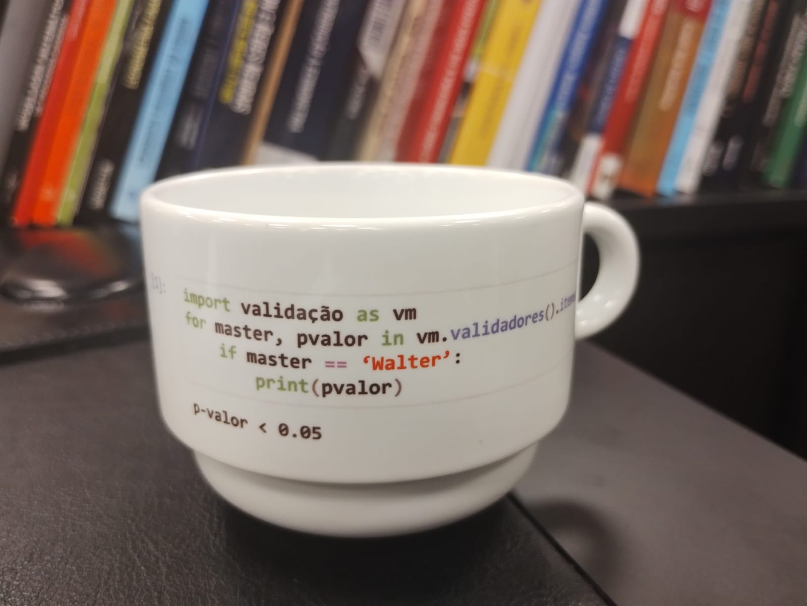

SFN Monitor
ao vivoDashboard do Sistema Financeiro Nacional com dados ao vivo do BACEN. Compara os 10 maiores bancos brasileiros em ROE, NIM, inadimplência, Basileia e eficiência. Atualização automática via Cloud Functions agendadas.
Engenheiro Físico (UFSCar), Mestre em Engenharia Financeira-Matemática (FGV-EESP). Atuação em modelos de risco de crédito, mercado, liquidez, precificação de derivativos, modelos regulatórios para bancos, tesourarias e assets.

Engenheiro Físico (UFSCar) | Mestre em Engenharia Financeira-Matemática (FGV-EESP)
Especialista em modelos de risco de crédito, mercado, liquidez, taxas de juros, futuros, termos, opções, XVAs, ECL-Banking, credit pricing.
Dashboards ao vivo
Dashboard do Sistema Financeiro Nacional com dados ao vivo do BACEN. Compara os 10 maiores bancos brasileiros em ROE, NIM, inadimplência, Basileia e eficiência. Atualização automática via Cloud Functions agendadas.
Dashboard público com dados ao vivo do ranking de reclamações do Banco Central. Mapeia irregularidades procedentes por assunto para todos os bancos S1 e S2, com filtros por conglomerado e série histórica trimestral.
Dashboard financeiro com dados oficiais da CVM. BP, DRE e indicadores setoriais de 628 empresas abertas brasileiras. Inclui Z-Score de Altman nos três modelos (original, ajustado e não-fabril de Caouette).
Ferramentas e bibliotecas
Aplicativo para precificação de empréstimos bancários com base em RAROC e ROE endógeno.
Biblioteca Python para precificação de opções vanilla e exóticas. Suporte a GBM, Monte Carlo, bermudas, asiáticas e outras.
Plataforma para estudos de otimização de portfólios — 13 modelos da literatura clássica (Markowitz, Black-Litterman, CDaR, Tracking Error, ERC, HRP) com backtest histórico e comparação multi-modelo sobre ações brasileiras. API FastAPI + dashboard React. MIT.
Análise de carteiras de crédito baseado na obra de Bolder (2018): modelos independentes, mix (beta-binomial, CreditRisk+), de limiar (Gaussiano, t-Student, ASRF), capital IRB de Basileia com ajuste de granularidade e decomposição de contribuições de risco por contraparte. Upload de carteira em padrão CSV, VaR e Expected Shortfall em múltiplos níveis.
Temas diversos
Simulador para estudos em engenharia de satélites. Propagação orbital com expansão em J2, WGS84, dinâmica de atitude com gradiente de gravidade, controle PID de apontamento Nadir, torques magnéticos e balanço energético com painéis solares em diversas configurações.
Primeira tradução integral (português · inglês) da obra fundadora da cronologia moderna, escrita por Joseph Scaliger em 1583, adormecida no latim (e outros idiomas antigos) por 443 anos. Publicado como texto-semente para revisão acadêmica colaborativa. Projeto inspirado pelos trabalhos de Grafton, T. (Princeton).
Tradução trilíngue (latim · português · inglês) do tratado técnico-sistemático que Joseph Scaliger escreveu em 1606 como continuação didática do De Emendatione Temporum. 390 páginas com definições, demonstrações e exemplos numéricos — manual de cronologia científica para a primeira geração de cronologistas humanistas. Projeto complementar ao De Emendatione, inspirado pelos trabalhos de Grafton, T. (Princeton).
Tradução trilíngue (latim · português · inglês) do tratado técnico de cronologia astronômica de Paulus Crusius (Basel 1578), fonte direta de Joseph Scaliger. 171 páginas com cálculos sincronizando calendários juliano, egípcio, hebraico e romano, tabelas comparativas de 27 eras civilizatórias, e a famosa Tabula Paschalis que data a Crucificação em 3 de abril de 33 d.C. Terceiro projeto do corpus, completando o trio canônico do nascimento da cronologia científica humanista. Projeto complementar ao De Emendatione, inspirado pelos trabalhos de Grafton, T. (Princeton).
Análises técnicas e quantitativas.
Modelo de política monetária customizado para o contexto brasileiro, incorporando câmbio, risco (CDS) e suavização de taxa.
Modelagem usando filtro de Kalman como referência para estudos de momento econômico para Brasil e EUA.
Este estudo analisa a evolução do juro real ex-ante e do juro neutro no Brasil com base em expectativas do BCB e dados do IPEA/B3.
Modelagem da taxa mínima exigida em um empréstimo bancário que justifica correr o risco de inadimplência e de custo de capital.
Modelagem da taxa mínima exigida em um empréstimo bancário que justifica correr o risco de crédito e de capital usando cadeias de Markov.
Apresentação simplificada do desenvolvimento de um modelo de credit scoring aplicada à aprovação de crédito PJ em instituições financeiras.
Uso da biblioteca LifeInsureR em R (Reinhold Kainhofer) aplicada ao produto seguro de vida inteiro e um aplicativo de testes.
Modelo heurístico para cálculo do VaR de crédito em uma carteira trading.
Comparação conceitual entre default risk charge no trading book e credit spread risk in the banking book.
Uma discussão sobre os tipos de opções em mercados financeiros, particularidades e diferenças.
Calibração de um modelo macro reduzido com dados capturados via APIs do BACEN, IBGE e Tesouro. Os dados sustentam o diagnóstico proposto por Andre Lara Resende (2017).
Estratégia de avaliação de modelos de risco de crédito ligada à informação mais recente da carteira: três eixos temporais (safra, data, maturidade), nowcast de PD por matriz de transição (roll-rate), conversão over→PD, ponte de convergência e EWI de descalibragem por faixa de score, sob RCMN 4.966 / IFRS 9. Inclui plano metodológico e notebook executável sobre carteira simulada.
Interessado em projetos e pesquisas aplicadas à modelagem, engenharia financeira e programação.